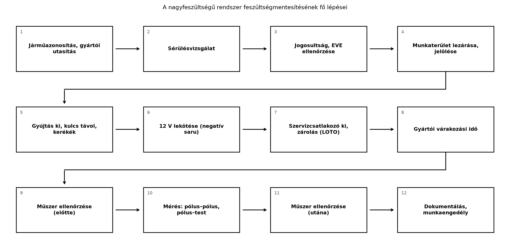

Egy hibrid vagy tisztán elektromos jármű szervizében a legelső kérdés nem az, hogy „hol kezdjük a szerelést?”, hanem hogy „feszültségmentes-e már a nagyfeszültségű (HV) rendszer?”. A HV-akkumulátor, az inverter és a hajtómotor több száz voltos egyenfeszültségen dolgozik, ezért érintésvédelmi szempontból életveszélyes. Ha a szerelő a hibás légkondicionáló-kompresszor vagy a hűtőrendszer miatt benyúl a motortérbe, de a HV-rendszer még feszültség alatt van, súlyos áramütést szenvedhet. Ebben az alfejezetben azt tanuljuk meg, hogyan lehet a HV-rendszert szabályosan, a gyártói utasítás szerint feszültségmentesíteni, a feszültségmentességet megbízhatóan ellenőrizni, és a munkát úgy dokumentálni, hogy a későbbi munkalépésekhez biztonságos munkakörnyezetet adjunk.
A következő folyamatábra a fő lépéseket mutatja. Az ábra nem helyettesíti a gyártói javítási utasítást; azt mindig be kell szerezni, és az abban megadott sorrendet, várakozási időt és mérési pontokat kell követni.

A járműben a HV-alkatrészeket narancssárga kábelek jelölik. A HV-akkumulátor cellasorát gyakran egy úgynevezett szervizcsatlakozó vagy HV-leválasztó szakítja meg; ez egy mechanikusan kihúzható dugó vagy rövidzáró híd, amely a cellákat kettéválasztja, vagy a HV-főáramkört megszakítja. Emellett az inverter közbensőköri kondenzátorai a kikapcsolás után is energiát tárolhatnak, ezért a feszültségmentesítésnek mindig része a várakozási idő, amely alatt ezek a kondenzátorok a beépített kisütő ellenállásokon keresztül lemerülnek.
Definíció. Feszültségmentesítés. A nagyfeszültségű rendszer olyan állapotba hozása, hogy a megengedett munkavégzési feltételek szerint már nem áll fenn veszélyes érintési feszültség, és a rendszer megbontása biztonságosan elvégezhető. Ez nem csupán a gyújtás kikapcsolását jelenti, hanem a 12 V-os fedélzeti hálózat leválasztását, a HV-leválasztó eltávolítását, a visszakapcsolás elleni biztosítást, a gyártói várakozási idő betartását és a feszültségmentesség méréssel történő igazolását.
Definíció. Feszültségmentesség ellenőrzése. Mérési sorozat, amellyel igazoljuk, hogy a megbontandó HV-áramkör minden hozzáférhető pólusa között, valamint minden pólus és a járműtest között az érintési feszültség nem haladja meg a megengedett értéket. A mérést csak megfelelő mérési kategóriájú (CAT III – ellenőrizendő a gyártói műszer-előírás) műszerrel szabad végezni.
Definíció. Szervizcsatlakozó (service disconnect). Olyan gyárilag kialakított, rendszerint narancssárga színű, reteszelhető dugós szerkezet, amely a HV-akkumulátor áramkörét mechanikusan megszakítja. Eltávolítása után a HV-akkumulátor főáramköre nem zárható vissza, amíg a csatlakozót vissza nem helyezik.
Definíció. Várakozási idő. Az az időtartam, amelyet a gyártó előír, mielőtt a HV-rendszerhez nyúlunk. Ez alatt az inverter, a DC/DC átalakító és más HV-alkatrészek belső kondenzátorai a beépített kisütő ellenállásokon keresztül biztonságos szintre sülnek ki. A várakozási idő jellemzően 5–10 perc, de típusonként eltérhet (ellenőrizendő: gyártói adat).
Szabály. A feszültségmentesítést csak arra kiképzett, jogosult személy végezheti a gyártói javítási utasítás szerint. A tanuló kizárólag oktató felügyeletével dolgozhat. A feszültség alatt lévő HV-rendszeren való munkavégzés tilos.
A munka megkezdése előtt azonosítani kell a járművet: a rendszám és/vagy alvázszám alapján be kell szerezni a pontos típusra vonatkozó javítási utasítást, kapcsolási rajzot és HV-biztonsági adatlapot. A gyártói utasításból derül ki, hol található a 12 V-os akkumulátor, a szervizcsatlakozó, a HV-biztosító és a mérési pontok, mekkora a várakozási idő, és milyen kiegészítő intézkedések szükségesek (például adatmentés, ablakemelő-tanítás elvesztése).
Sérülésvizsgálat. A feszültségmentesítés előtt szemrevételezéssel ellenőrizni kell a HV-alkatrészeket: sérült-e a narancssárga kábel szigetelése, látható-e repedés, deformáció, folyadékszivárgás, égésnyom vagy idegen tárgy. Sérült HV-akkumulátor vagy vezeték esetén a gyártói mentési adatlap és a munkavédelmi eljárásrend szerint kell eljárni, és a járművet nem szabad feszültségmentesíteni, amíg a kockázatot nem értékelték (ellenőrizendő: a gyártói és hatósági eljárásrend).
Egyéni védőeszközök ellenőrzése. A feszültségmentesítéshez az alábbi egyéni védőeszközök szükségesek:
A szigetelő kesztyűt használat előtt levegővel ellenőrizni kell, nem lehet rajta lyuk, vágás, repedés vagy nedvesség. A szigetelő kesztyű fölé mechanikai védő (bőr)kesztyűt húzunk; a gyártó előírhat alá belső pamutkesztyűt is. A kesztyű felvételének módja is számít: a kesztyű szárait a ruha ujjára kell húzni, vagy a kesztyű alá belső védőkesztyűt kell venni, ahogy a gyártó előírja. Az EVE-k állapotát minden munkakezdés előtt rögzíteni kell a munkalapon.
HV-biztonság. A következő lépéseket kizárólag oktatói felügyelettel, a gyártói utasítás szerint hajtsa végre. Minden közreműködő viseljen megfelelő, ellenőrzött egyéni védőeszközt, és a munkaterületet jelölőszalaggal, táblával le kell zárni.
A feszültségmentesítés gyakorlati sorrendje általában az alábbi. A pontos lépéseket a gyártói utasítás határozza meg; az itt leírt sorrend tanulási példa.
Jármű előkészítése. Húzza be a rögzítőféket, állítsa a váltót P vagy üres fokozatba, helyezzen kerékéket. Kapcsolja ki a gyújtást, húzza ki a kulcsot, a kulcs nélküli indításnál távolítsa el a kulcsot a járműből, és helyezze a munkaterületen kívül, legalább a gyártó által meghatározott távolságra (ellenőrizendő: gyártói adat). Gondoskodjon arról, hogy senki ne indíthassa el a járművet.
A 12 V-os akkumulátor lekötése. A fedélzeti hálózat vezérlőegységei 12 V-ról kapnak tápfeszültséget, ezért a 12 V-os akkumulátor leválasztása megakadályozza a HV-rendszer véletlen bekapcsolását. A lekötés sorrendje kötelező: először a negatív (test) sarut kell leemelni, és azt biztonságosan el kell szigetelni, hogy ne érhessen vissza a pólushoz. Utána lehet a pozitív saruval dolgozni, ha a gyártó előírja. A járműgyártó itt további teendőket is előírhat: adatmentés, ablakemelő- vagy kormányszögszenzor-tanítás. Ezeket a gyártói utasítás szerint el kell végezni.
A szervizcsatlakozó / HV-leválasztó eltávolítása. Keresse meg a narancssárga szervizcsatlakozót. Oldja ki a reteszt a gyártó által előírt módon, majd húzza ki a dugót, és helyezze biztonságos, elkülönített tárolóba. Az eltávolított csatlakozót visszakapcsolás ellen zárolni kell: a csatlakozóra vagy a nyílására reteszelő eszközt (pl. lakatot vagy azonosítószalaggal ellátott reteszt) kell helyezni, hogy véletlenül senki se tudja visszahelyezni.
A visszakapcsolás elleni biztosítás. A 12 V-os akkumulátor negatív saruja is legyen biztosítva, például zárható sarucsizma vagy műanyag doboz segítségével. A munka megkezdéséig a kulcsot és a szervizcsatlakozót csak a munkát végző, jogosult személy tarthatja magánál.
Várakozási idő betartása. A szervizcsatlakozó eltávolítása után a gyártó által megadott várakozási időt le kell tölteni. Ez alatt a HV-rendszert tilos megbontani, csatlakozókat szétnyitni vagy méréseket kezdeni. A várakozási időt stopperrel vagy a munkalapon rögzített időponttal kell betartani.
A 2–5. lépés kézi fogásait az alábbi képsor mutatja: a 12 V-os negatív saru letakarása, a szervizcsatlakozó kétlépcsős kioldása szigetelő kesztyűben, a kivett dugó elzárása, végül a lakat, a címke és a várakozási idő indítása.
Továbbvitt eredmény. A fenti feszültségmentesítési lépések sorrendjét, a 12 V-os akkumulátor negatív sarujának először történő lekötését, a szervizcsatlakozó zárolását és a várakozási idő betartását használjuk a Mérések a HV-rendszeren: szigetelési ellenállás és potenciálkiegyenlítés alfejezetben, valamint a Írásbeli és szóbeli vizsgafelkészülés gyakorlati szituációs feladatainál.
A várakozási idő letelte után meg kell győződni arról, hogy a rendszer valóban feszültségmentes. Ehhez a mérést a következőképpen kell elvégezni.
Műszer kiválasztása. A méréshez legalább CAT III mérési kategóriájú, kalibrált, DC feszültségmérésre alkalmas digitális multimétert kell használni, amelynek feszültségmérési tartománya legalább 1000 V DC (ellenőrizendő: a gyártó műszer-előírása és a munkavédelmi szabályzat). A mérőzsinóroknak is CAT III besorolásúaknak kell lenniük, sérülésmentesek, és a csatlakozóik nem lehetnek lazák.
Műszerellenőrzés előtte. Mielőtt a HV-rendszeren mérünk, a műszert egy ismert feszültségforráson ellenőrizni kell. Az ellenőrzésre a gyártó által előírt eszközt használjuk: kétpólusú feszültségvizsgálót (MSZ EN 61243-3, ellenőrizendő) vagy CAT III multimétert. A műszer működését olyan ismert forráson (próbaforráson) ellenőrizzük, amely lehetőség szerint a mérendő tartományba eső feszültséget ad; a 12 V-os akkumulátor csak akkor fogadható el, ha a gyártói eljárás megengedi (ellenőrizendő). Meg kell győződni arról, hogy a műszer a várt értéket mutatja (12 V-os forrásnál pl. 12,5–12,8 V körül, a töltöttségi állapottól függően). Ha a műszer hibás értéket mutat, nem szabad használni.
Mérési pontok. A feszültségmentesség ellenőrzését mindig a gyártó által megadott mérési pontokon kell elvégezni. Általában az alábbi méréseket kell elvégezni:
Az ábra (a) része a három mérési párt (M1–M3) és a rögzítendő értékeket, a (b) része a próba–mérés–próba sorrendet mutatja: a mérés csak akkor érvényes, ha a műszer utána is a várt értéket adja.
Minden mérésnél rögzíteni kell az értéket. A megengedett maradékfeszültségre a gyártó ad előírást; a gyakorlatban gyakran 60 V DC alatti érintésvédelmi határt használnak, de a HV-járműveknél a gyártói előírás sok esetben ennél szigorúbb, például 0–30 V közötti maximális értéket ad meg (ellenőrizendő: gyártói adat és hatályos érintésvédelmi előírás). Ha a mért feszültség bármely ponton a megengedett határ felett van, a rendszert tilos megbontani, és a feszültségmentesítést újra kell értékelni.
Műszerellenőrzés utána. A mérés befejezése után a műszert ismét ellenőrizni kell ugyanazon az ismert feszültségforráson. Ezzel igazoljuk, hogy a mérés alatt a műszer nem hibásodott meg, és a kapott eredmények megbízhatóak. Az „előtte–utána” ellenőrzés a mérési eljárás kötelező része.
Fontos mérési gyakorlat. A feszültségmentesség ellenőrzésekor először a nagy feszültségre gondolva megfelelő méréshatárt kell választani; a multimétert DC feszültségmérésre kell állítani. A mérési pontokat soha nem kézzel, hanem a mérőzsinór hegyével érintjük, miközben a másik kezünkkel nem érünk a járműtesthez, és a testünk nem zárhat áramkört.
A feszültségmentesítést és a mérési eredményeket mindig írásban kell rögzíteni. A dokumentációnak tartalmaznia kell:
A munkát csak ezen dokumentálás és a munkaterület lezárása után szabad megkezdeni.
Visszakapcsolás. A munka befejezése után a rendszert fordított sorrendben kell visszaállítani:
Figyelem. Ha a HV-rendszer visszakapcsolásakor bármilyen rendellenességet észlel (szokatlan zaj, füst, szag, hibakód), a munkát azonnal le kell állítani, és az eljárásrend szerint kell eljárni.
Egy műhelyben hibrid személygépkocsi klímakompresszorát kell cserélni. A kompresszor elektromos hajtású, a HV-rendszer része. A HV-jogosult szerelő beazonosítja a járművet, letölti a gyártói online adatbázisból a feszültségmentesítési eljárást, szemrevételezi a HV-rendszert, lezárja és jelöli a munkaterületet, ellenőrzi a szigetelő kesztyűt (légpróba) és felveszi az EVE-t (szigetelő és felső bőrkesztyű, arcvédő). A járművet áramtalanítja: a gyújtást kikapcsolja, a kulcsot (kulcs nélküli rendszernél a vezérlőt) a munkaterületen kívül helyezi, a 12 V-os akkumulátor negatív saruját leemeli, majd a HV-szervizcsatlakozót eltávolítja, és lakatolható retesszel biztosítja, hogy ne lehessen visszatenni. A gyártó 10 perc várakozást ír elő; a szerelő stopperrel méri az időt. A várakozás letelte után CAT III multiméterrel megméri a feszültséget a gyártó által megadott pontokon: HV+ és HV− között 0,0 V, HV+ és test között 0,0 V, HV− és test között 0,0 V. A műszert előtte és utána a 12 V-os akkun is ellenőrzi, mindkétszer 12,7 V-ot mutat. A mérési jegyzőkönyvet kitölti, aláírja, és csak ezután kezdi a kompresszor cseréjét. A munka végén a szervizcsatlakozót visszahelyezi, a 12 V-os akkut visszaköti, és a jármű „READY” állapotát ellenőrzi.
Tanulság. A biztonságos munkavégzéshez nem elég kihúzni a szervizcsatlakozót; a várakozási idő és a feszültségmentesség mérése nélkül a közbensőköri kondenzátorok még veszélyes feszültséget tárolhatnak.
Biztonsági korlát. A feladat tanműhelyi környezetre, oktató felügyeletére és a gyártói javítási utasítás betartására vonatkozik; a megadott értékek tanulási példák.
Cél. A HV-rendszer biztonságos feszültségmentesítése, a feszültségmentesség ellenőrzése és a munkához szükséges dokumentáció elkészítése.
Jármű- és adatazonosítás. Rendszám, alvázszám, típus, gyártói javítási utasítás száma és kiadási dátuma, HV-rendszer típusa.
Szükséges szerszámok, mérőeszközök, anyagok.
- Szigetelő kesztyű mechanikai (bőr) védőkesztyűvel, ívzárlat elleni
arcvédő, szükség szerint védőruha.
- CAT III digitális multiméter, CAT III mérőzsinórok.
- Reteszelő eszközök a szervizcsatlakozó és az akkusaru
biztosítására.
- Kerékék, jelzőtábla, elszívó berendezés, ha a motorjáratás
szükséges.
- Munkalap, toll, óra vagy stopper.
Munkavédelmi és környezetvédelmi lépések.
- A munkaterületet le kell zárni, idegen személyek nem tartózkodhatnak a
közelben.
- A járművet sík, szilárd talajon kell elhelyezni, rögzítőféket behúzni,
kerékéket használni.
- A HV-alkatrészekre és a narancssárga vezetékekre csak a gyártói
utasítás szerint szabad nyúlni.
- A használt kesztyűt, szigetelő anyagokat a munkavédelmi előírások
szerint kell ellenőrizni és tárolni; a munkavégzés során keletkezett
hulladékot szelektíven kell gyűjteni.
Számozott munkalépések.
1. Azonosítsa a járművet és gyűjtse be a gyártói feszültségmentesítési
utasítást.
2. Végezzen szemrevételezést a HV-rendszeren; sérülés esetén álljon le,
és kérjen utasítást.
3. Ellenőrizze az EVE-ket, különösen a szigetelő kesztyűt.
4. Készítse elő a munkaterületet: rögzítőfék, P állás, kerékék, kulcs
kivétele, kulcs a munkaterületen kívül.
5. Kösse le a 12 V-os akkumulátor negatív saruját, szigetelje és
biztosítsa.
6. Távolítsa el a szervizcsatlakozót a gyártó által megadott módon, és
zárja visszakapcsolás ellen.
7. Indítsa el a várakozási idő mérését; tartsa be a gyártói időt.
8. A várakozási idő letelte után ellenőrizze a multimétert ismert
feszültségforráson (pl. a lecsatolt 12 V-os akkumulátor).
9. Mérje meg a feszültséget a gyártói mérési pontokon; rögzítse az
értékeket.
10. Ellenőrizze a műszert ismét ugyanazon ismert forráson.
11. Ha minden mért érték a megengedett határ alatt van, dokumentálja a
feszültségmentességet, és adja ki a munkaengedélyt.
12. A munka végén fordított sorrendben állítsa vissza a rendszert, és
ellenőrizze a jármű működését.
Ellenőrzési pontok. A mérési jegyzőkönyvben példaértékek szerepelhetnek: HV+–HV−: 0,0 V; HV+–test: 0,0 V; HV−–test: 0,0 V; 12 V-os akkumulátor előtte/utána: 12,7 V. Ezek tanulási példák (ellenőrizendő: gyártói határértékek és a tényleges jármű állapota).
Tipikus hibák. A mérés előtt kihagyni a műszerellenőrzést; a várakozási idő lerövidítése; a szervizcsatlakozó nem zárolt elhelyezése; a mérési pontok kihagyása; a dokumentálás elmulasztása.
Dokumentálás. Töltsön ki munkalapot, rögzítse a járműazonosítót, a műszer kalibrálási azonosítóját, a mért értékeket, az időpontokat, és írja alá.
A várakozási idő elhagyása. A szerelő kihúzza a szervizcsatlakozót, és azonnal mér. Ha a közbensőköri kondenzátorok még nem sültek ki, a mért feszültség 0 V-nál nagyobb lehet, vagy ha a mérés túl korai, a kondenzátorok a mérés után is veszélyes feszültséget szolgáltathatnak. Helyes gyakorlat: mindig tartsa be a gyártói várakozási időt, és csak utána mérjen.
A mérőműszer ellenőrzésének elhagyása. Ha a műszer a mérés előtt nem működik helyesen, a 0 V-os kijelzés hamis biztonságérzetet adhat. Helyes gyakorlat: előtte–utána ellenőrzés ismert feszültségforráson, és a mérési jegyzőkönyvben ezt rögzíteni.
Csak egy pólus között mérni. A feszültségmentesség akkor teljes, ha minden póluspár és a test felé is elvégezzük a mérést. Például ha csak HV+ és HV− között mérünk, egy esetleges szigetelési hiba miatt a test felé feszültség maradhat, ami érintéskor áramütést okoz. Helyes gyakorlat: a gyártói mérési pontokat maradéktalanul végigmérni, és az eredményeket jegyzőkönyvezni.
A 12 V-os akkumulátor pozitív sarujának levétele előtt a negatívot elhagyni. Ez szikrázáshoz, rövidzárlat veszélyéhez vezethet. Helyes gyakorlat: mindig először a negatív sarut, visszakötéskor utoljára.
1. feladat (A). Fogalmazza meg saját szavaival a feszültségmentesítés és a feszültségmentesség ellenőrzése közötti különbséget.
2. feladat (A). Számozza be a feszültségmentesítés
alábbi lépéseit megfelelő sorrendben:
- Szervizcsatlakozó eltávolítása és zárolása
- 12 V-os akkumulátor negatív sarujának lekötése
- Várakozási idő betartása
- Járműazonosítás és gyártói utasítás beszerzése
- Feszültségmentesség ellenőrzése
3. feladat (B). Egy szerelő a szervizcsatlakozót eltávolította, a 12 V-os akkumulátort lekötötte, majd azonnal megkezdte a HV-alkatrész cseréjét, mert a multiméter 0 V-ot mutatott. Mi a hiba a leírásban? Mit kellett volna tennie?
4. feladat (B). Írja le a HV-rendszer visszakapcsolásának lépéseit a munka befejezése után.
5. feladat (C). Miért nem elegendő a feszültségmentesség ellenőrzésekor csak a HV+ és HV− közötti feszültséget megmérni? Milyen veszélyt hordozhat egy elmaradt mérés a test felé?
6. feladat (D). Egy műhelyben a tanuló hibrid
járművön a feszültségmentesítés után a mérési jegyzőkönyv kitöltése
nélkül akar munkához kezdeni. Az oktató megkérdezi:
- Mi volt a várakozási idő? A tanuló nem tudja.
- Ellenőrizte-e a műszert előtte–utána? Nem.
- Megvannak-e a mért feszültségértékek? Nincs dokumentálva.
Milyen következménye lehet a hiányos eljárásnak? Írjon legalább két
érvet a dokumentáció és a mérési protokoll fontossága mellett.
Önellenőrzés – válaszok
Feladatok megoldása
1. feladat (A). A feszültségmentesítés az a műveletsor, amellyel a HV-rendszert biztonságos állapotba hozzuk (12 V leválasztása, szervizcsatlakozó eltávolítása, várakozás). A feszültségmentesség ellenőrzése pedig mérési bizonyíték arra, hogy a feszültség valóban elérte a megengedett, biztonságos szintet.
2. feladat (A). Helyes sorrend: 1 – Járműazonosítás és gyártói utasítás; 2 – 12 V-os akkumulátor negatív sarujának lekötése; 3 – szervizcsatlakozó eltávolítása és zárolása; 4 – várakozási idő betartása; 5 – feszültségmentesség ellenőrzése.
3. feladat (B). A hiba: a várakozási időt nem tartotta be, és a feszültségmentességet nem ellenőrizte a gyártói mérési pontokon. A 0 V-os kijelzés csak akkor fogadható el, ha a műszert előtte–utána ellenőrizték, és a várakozási idő letelt.
4. feladat (B). Visszakapcsolás lépései: szerszámok és idegen tárgyak eltávolítása a HV-térből; szervizcsatlakozó visszahelyezése és reteszelés; a 12 V-os akkumulátor negatív sarujának visszakötése; diagnosztikai ellenőrzés, hibakód-törlés a gyártó szerint; a jármű indítása és a „READY” állapot ellenőrzése; próbaút; dokumentálás.
5. feladat (C). A test felé mérés a szigetelési hibák kiszűrése miatt fontos. Ha például egy kontaktor beragadt, vagy a pakkon belül egy cellacsoport szigetelése testzárlatos, a szervizcsatlakozó kihúzása után HV+ és HV− között 0 V mérhető, a HV− (vagy HV+) és a karosszéria között viszont akár a félpakk feszültsége (pl. ≈ 190 V) is. Ezért kell minden pólust a test felé is mérni. Az ilyen hiba érintésveszélyes, és a testpotenciál megemelkedhet a jármű karosszériáján.
6. feladat (D). A dokumentáció és a mérési protokoll elhagyása miatt nem bizonyítható, hogy a rendszer valóban feszültségmentes. A várakozási idő leteltének hiánya azt jelenti, hogy a kondenzátorok nem biztos, hogy kisültek. A műszerellenőrzés hiánya miatt a mért értékek hamis biztonságérzetet adhatnak. A hiányos eljárás áramütéshez, tűzhöz vagy a későbbi javítási lépések hibás diagnózisához vezethet. A dokumentáció a munkavédelmi eljárásrend része, és a hatósági vagy gyártói audit során is kötelező.
A HV-rendszeren végzett munka előtti feszültségmentesítés kötelező, gyártói utasítás szerinti műveletsor. Először a járművet azonosítjuk, a gyártói eljárást beszerezzük, a HV-alkatrészek sérüléseit szemrevételezéssel ellenőrizzük, és az EVE-ket megvizsgáljuk. A feszültségmentesítés lépései: a gyújtás kikapcsolása, a kulcs eltávolítása, a 12 V-os akkumulátor negatív sarujának lekötése, a szervizcsatlakozó eltávolítása és visszakapcsolás elleni zárolása. Ezt követi a gyártói várakozási idő, amely alatt a közbensőköri kondenzátorok kisülnek. A feszültségmentességet csak CAT III, kalibrált multiméterrel szabad ellenőrizni. A műszert a mérés előtt és után ismert feszültségforráson ellenőrizni kell. A mérést minden pólus között és minden pólus és a járműtest között el kell végezni, és az eredményeket munkalapon dokumentálni kell. A munkát csak a feszültségmentesség méréssel történő igazolása után szabad megkezdeni. A visszakapcsolás fordított sorrendben történik, a szervizcsatlakozó visszahelyezésével és a 12 V-os akkumulátor visszakötésével. A feszültségmentesítés szabályos végrehajtása az alapja a szigetelésmérésnek és a vizsgafelkészülés gyakorlati szituációinak.
Forrástípusok: gyártói javítási utasítások és HV-biztonsági adatlapok; ENSZ-EGB ECE R100 (nagyfeszültségű elektromos hajtás biztonsága – ellenőrizendő); magyar munkavédelmi törvény és a vonatkozó rendeletek; IEC 61010 / MSZ EN 61010 mérőműszer-biztonsági szabvány; gyártói multiméter-kézikönyvek; munkavédelmi oktatási anyagok.
Ellenőrizendő állítások:
- a várakozási idő jellemző 5–10 perces értéke;
- a feszültségmentesség elfogadható határértéke (60 V vagy annál
alacsonyabb);
- a szigetelő kesztyűk és védőeszközök pontos feszültségszintjei és
vizsgálati előírásai;
- a 12 V-os akkumulátor lekötésének további gyártói feltételei
(adatmentés, tanítások);
- a mérési kategória (CAT III) alkalmazhatósága az adott járműre.